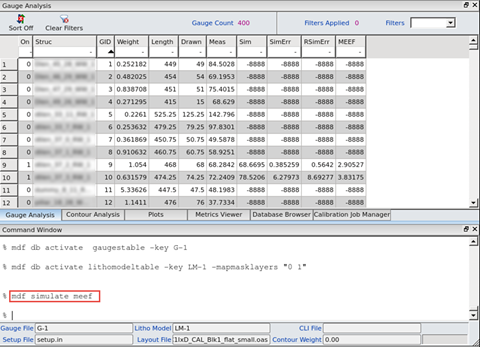
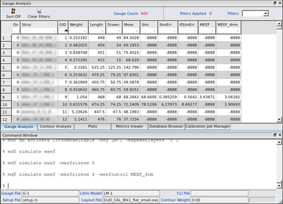

You can add a column to the Gauge
Analysis tab in order to display calculated MEEF (Mask Error
Enhancement Factor) values. Calibre nmModelflow maintains a universal
gauge spreadsheet that contains all defined columns. Only a selected
subset of the universal gauge spreadsheet is displayed in the Gauge
Analysis tab.
Procedure
- Activate
a set of gauges so that they appear in the Gauge Analysis tab.
- Issue the
command “mdf simulate meef” in the Calibre nmModelflow Command Window,
or click the Calculate MEEF button in the Gauges tab.
The MEEF column appears with the calculated values
for the loaded gauges. The MEEF value will stay until the command
is issued again.

Using the
-simtype option allows you to calculate the aerial image (“aerial”
option, which adds a CtrlMEEF column), resist image (adding the
MEEF column, which is the default of “full”), or both (“all” option).
As an option,
you can issue the “mdf simulate meef” command and a desired size, such
as “-meefsizenm 4”. In the same line, specify the desired column
name, such as “-meefoutcol MEEF_4nm”.
By default,
the MEEF up-sizing calculation (MEEF=delta(sim)/delta(drawn)) uses
1 nm to calculate the new MEEF values. This is a global sizing (all
edges move outward by the specified value in nanometers) of the
entire pattern within 1 micron area of the site of operation. You
can specify a different size with the “-meefsizenm value”
argument.
Specifying
the “-meefoutcol label”
argument creates a new, custom column with the data in it for side
by side comparison. The previous MEEF values are kept in the column
labeled MEEF, and a new column with the specified name is created
to store the values calculated with the new specified MEEF value.

Results
MEEF columns are produced with the specified names and MEEF sizes
(in nanometers).